| |
Top 10 Theme Parks

Welcome to an Incrediblecoasters Top 10 List. When we list stuff, we actually explain why. Now when you ask most roller coaster enthusiasts "What's your favorite park?", they'll answer you right away and can give you their favorites right there and then. I however, have never been one to really rank amusement parks. They're simply too different. I enjoy almost all amusememnt parks I go to, and each one usually has a different style. So how can I compare them? How can I compare two completely different types of parks that are both really good but for different reasons? Normally I just seperate the parks I visit into 4 different categorys. Parks that need serious improvement, credit whore stops, parks that are decent and would enjoy returning to but am not in a hurry to go back to, and parks that kick major ass and I want to go back ASAP. But since this is such a popular and interesting question, I've composed the 10 best amusement parks that I have currently been to. Now, this isn't a question of which park do I most want to return to, because that constantly changes based on my mood. The parks on this list have been chosen based on my experience, the oppertunities they provide everyone with, and how the parks are run. Also, because this is such a difficult thing to judge, you may notice that the Top 10 Theme Park List changes much more dramaticly than most other lists. You might notice parks that used to be very high on the list not appear at all, and vice versa, with some popping on and off the list. So yeah. It's incredibly difficult to judge. And I'm probably going to piss a ton of people offf with this list through the picks. So with that said, let's take a look at the Top 10 Greatest Parks that I have been to.
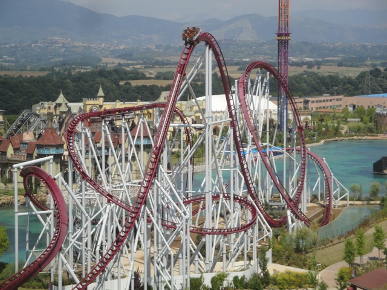
#10.

Busch Gardens Williamsberg
Williamsberg, Virginia, U.S.A
All right. First up is Busch Gardens Williamsberg. Now this is one of the biggest and most well known parks in the United States. And for good reasons. It kicks ass. It and its sister park, Busch Gardens Tampa (which just barely missed the cut and was previously on this list) have a ton of cool stuff. For instance, their roller coaster collection. Busch Gardens Williamsberg has an awesome roller coaster collection. I mean, this park has three different B&Ms! And while none of them are Top 10 Rides or anything, they're all still a ton of fun. Alpengeist is really good and without a doubt, one of the better B&M Inverts, only being beaten out by the best of the best. Griffon is the best B&M Dive Machine, and those are already really good rides, so Griffon is great. And while Apollo's Chariot may be overrated and one of the weaker B&M Hypers, it still is a lot of fun and has some decent floater air. And those are just the B&Ms! Loch Ness Monster is not only the prettiest coaster ever thanks to its interlocking loops, but it's just a ton of fun. Not only cause of said loops, but the first drop is really big and fun, and that indoor triple helix is cool. Speaking of indoors, Verbolten is also a really fun rollercoaster. It's mostly indoors, but it has a lot of cool tricks up its sleeve. Oh, and Pantheon looks like it's gonna be super good. And the other coasters are fun. Tempesto is a clone, but still fun. And Invadr is a decent family woodie.
  But of course, a great park is far more than just its coaster collection. And while Busch Gardens Williamsberg has a good coaster collection, it's far from the best. Several parks that aren't on this list beat the park as far as coaster collection goes. So what else propels this park to be one of the best ever. Well first off, the other rides are really good too. But what really makes this park stand out is the theming. Take Escape from Pompeii. Ride-wise, this is just a typical ordinary shoot the chutes ride. Nothing special at all whatsoever. However, the theming this ride has is REALLY good. And that is what makes this into a REALLY good water ride. And really, just the theming in general at both Busch Gardens parks is phenomenal, Busch Gardens Tampa is themed to Africa, while Busch Gardens Williamsberg is themed to Europe. While I've never been to Africa, so I can't talk about the accuracy of the theming at Busch Gardens Tampa, I have gone to Europe multiple times, and I can confirm. It looks really freaking good! The arcitecture here is just phenomenal. It really is a submersive experience. The only theme park that does a better job at teleporting you to Europe is Europa Park (Spoiler Alert. It's down below).But on top of that, it has a decent drop tower, a great 3D shooting show, some cool animals (this is a Busch/Sea World park after all), a lot of good food that really fits in with all the cuisine from Europe. It's just a fantastic park with a ton of stuff to do. If you find yourself in Williamsberg, you have to stop and check it out.
But of course, a great park is far more than just its coaster collection. And while Busch Gardens Williamsberg has a good coaster collection, it's far from the best. Several parks that aren't on this list beat the park as far as coaster collection goes. So what else propels this park to be one of the best ever. Well first off, the other rides are really good too. But what really makes this park stand out is the theming. Take Escape from Pompeii. Ride-wise, this is just a typical ordinary shoot the chutes ride. Nothing special at all whatsoever. However, the theming this ride has is REALLY good. And that is what makes this into a REALLY good water ride. And really, just the theming in general at both Busch Gardens parks is phenomenal, Busch Gardens Tampa is themed to Africa, while Busch Gardens Williamsberg is themed to Europe. While I've never been to Africa, so I can't talk about the accuracy of the theming at Busch Gardens Tampa, I have gone to Europe multiple times, and I can confirm. It looks really freaking good! The arcitecture here is just phenomenal. It really is a submersive experience. The only theme park that does a better job at teleporting you to Europe is Europa Park (Spoiler Alert. It's down below).But on top of that, it has a decent drop tower, a great 3D shooting show, some cool animals (this is a Busch/Sea World park after all), a lot of good food that really fits in with all the cuisine from Europe. It's just a fantastic park with a ton of stuff to do. If you find yourself in Williamsberg, you have to stop and check it out.
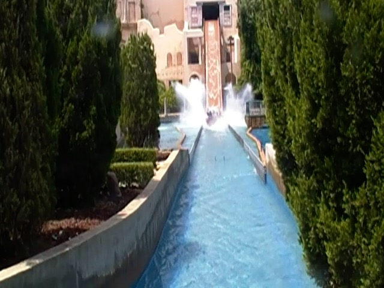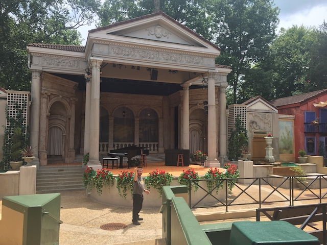
#9.

Phantasialand
Brühl, North Rhine-Westphalia, Germany
All right. Up next is Phantasialand. This is a park that I liked a lot when I visited. However, the one thing that I had with the park was that it didn't have quite enough rides. But the stuff that they did have was really freaking good. Case in point, Winjas. I mean, this is just the parks Mauhrer Sohne Spinner. Surely this is nothing special. Nope. This ride is really freaking awesome! This spinning coaster does so many things that you wouldn't expect a coaster to do, and it's just such a good ride. The only spinning coaster that would be more fun is Euro-Mir since that's just a giant party ride. And then there's Black Mamba. It's not the greatest B&M Invert ever, but you have to admit. The theming on this ride is simply incredible! That makes it just a ton of fun to ride. And it blends in beautifully to the park. It's not a big stand out ride by any means. But it blends in beautifully. And those are just the coasters that existed when I visited. Now they have Taron, which constantly gets praised as one of the best coasters in Europe, and yeah. It does look pretty awesome! And their new for 2020 Coaster, F.L.Y, well....that's a freaking launched flying coaster! That's gotta be good!
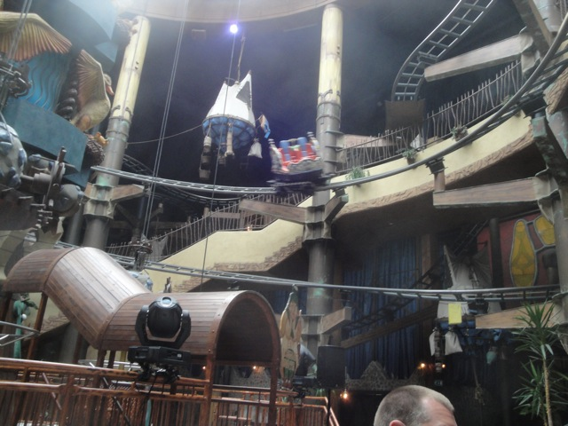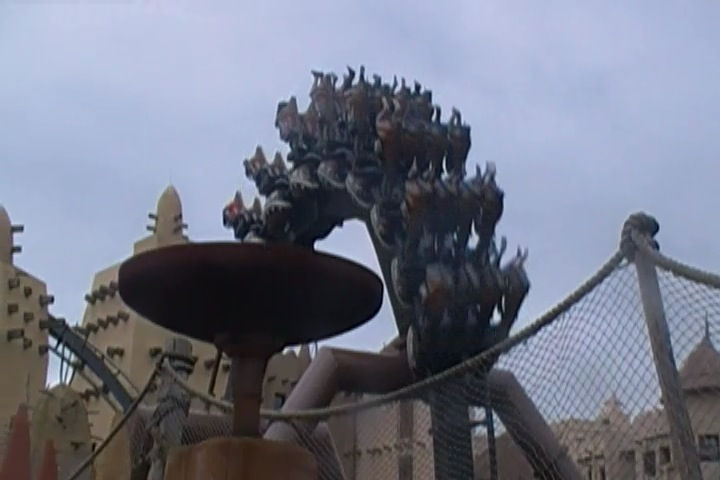
But coaster selection isn't everything. There are a lot more things that make a really good park that you must take into account. And man, oh man. Phantasialand does NOT dissapoint in this regard at all! First off, the flat rides at this park. Mystery Castle is freaking amazing. One of the coolest drop towers ever! And I'm not going to spoil what this ride does for you. Because much like with Winjas, if you have no idea what the ride does, it is that much better. Taron is great as well. Not only is it a Top Spin, which are becoming incredibly rare nowadays, but this was unquestionably, the best Top Spin program ever. It flipped so much and all the fire effects on the ride were so good! The dark rides are all really good. Maus dau Chocolat is basically a ride with the Toy Story Mania technology, except about shooing away rats in a bakery (Sorry Remy). That's a ton of fun. Also, there's Hollywood Tour, which is fun in the exact opposite direction. Yeah. It sucks. But it sucks in all the right ways. It's almost Tommy Wisseau-like. You're laughing at the ride, not with it. But it's still a ton of fun. Their water rides are super good. River Quest is one of the best water rides ever, and though it was added after my visit, Chilapas looks amazing and another amazing log flume. But on top of all those other great rides, the park just has a beautiful atmosphere. I know I've always said that Phantasialand is a park that really emphasizes quality over quantity. Well, now they're added a lot more new stuff. So now this park has a ton of great rides that are all really high quality. Phantasialand has been growing in popularity with coaster enthusiasts over the years, and for understandable reasons. Go check it out and see all the awesomeness for yourself.
 
#8.
Universal Studios Japan
Osaka, Osaka, Japan
Located in the Konohana district of Osaka, Universal Studios Japan doesn't seem to get quite the attention that it's American siblings, Universal Studios Hollywood and the Universal Orlando Resort get. ESPECIALLY the Orlando resort. And while American audiences may not be too familiar with Universal Studios Japan, don't think for a second that this place doesn't get appreciated or busy. OH GOD NO!!!! Universal Studios Japan just may be the BUSIEST PARK IN THE WORLD!!! Certainly the busiest I've ever been to. This place gets f*cking MOBBED!!!! And for good reason. This place is F*CKING AWESOME!!! This place has A LOT to do. First off, they have the best coaster collection out of all the Universal parks (at least now they do). Seriously, Flying Dinosaur is F*CKING AMAZING!!! HOLY SH*T!!! I know it doesn't quite make the Top 10 List (I've been on so many good coasters), but MAN!!! This is unquestionbably, the best B&M Flyer ever!!! I mean, this makes Tatsu feel like Superman: Ultimate Flight. All those crazy amazing forceful B&Ms that got made in the 90s, this is on par with those only as a Flying Coaster! Flying Dinosaur is a coaster that needs to come to ALL the Universal Parks. The park also does have other fun coasters. Sure, Hollywood Dream may be my least favorite B&M Hyper, but it's still fun. And the fact that they run this ride backwards makes it much more fun (Please do this to other B&M Hypers), and apparently Space Fantasy is awesome. I wasn't a huge fan of it when it was Evangelion. But that ride keeps changing, and I really hope they eventually bring it back to Space Fantasy, or that one of the newer versions is amazing, as I'd really like to experience Space Fantasy, or something on par (I was not a huge fan of Evangelion.)
 But again, there has to be more to this park than a really good coaster collection. And of course, they have all sorts of other rides. Basically, the park is essentially all the highlights of the other Universal parks as well as the last bastion for rides that have been demolished at the other Universal parks. For instance, you wanna ride Spiderman? They got it here. Jurrasic Park? They got it here. You a big Potterhead that just wants to look all around Hogwarts and ride Forbidden Journey? Yep. They got that here too. Miss Backdraft? They got it here. Jaws? It's still alive here. They have alls sorts of good shows, great dark rides, and all that you would want from a Universal Park. And of course, all the theming is great. Hogwarts looks great, the Jurassic World area also looks really good (Especially with Flying Dinosaur draped everywhere). I know over the last few years, Universal Studios (particuarly in Orlando) has been constantly making decisions that have really pissed me off and that I thought were wrong. Well, Universal Studios Japan was a breath of fresh air and really reminded me of Universal Orlando back in its glory days. It's just a fantastic park, whether you want to ride Universal's best coaster, or experience some rides that they removed from all the other Universal parks, Universal Studios Japan is a park for you to check out. Sure, it may be mobbed, but it's the best Universal Park (not entirely sure since I still have to do Singapore) and a fantastic attraction to visit when checking out Osaka.
But again, there has to be more to this park than a really good coaster collection. And of course, they have all sorts of other rides. Basically, the park is essentially all the highlights of the other Universal parks as well as the last bastion for rides that have been demolished at the other Universal parks. For instance, you wanna ride Spiderman? They got it here. Jurrasic Park? They got it here. You a big Potterhead that just wants to look all around Hogwarts and ride Forbidden Journey? Yep. They got that here too. Miss Backdraft? They got it here. Jaws? It's still alive here. They have alls sorts of good shows, great dark rides, and all that you would want from a Universal Park. And of course, all the theming is great. Hogwarts looks great, the Jurassic World area also looks really good (Especially with Flying Dinosaur draped everywhere). I know over the last few years, Universal Studios (particuarly in Orlando) has been constantly making decisions that have really pissed me off and that I thought were wrong. Well, Universal Studios Japan was a breath of fresh air and really reminded me of Universal Orlando back in its glory days. It's just a fantastic park, whether you want to ride Universal's best coaster, or experience some rides that they removed from all the other Universal parks, Universal Studios Japan is a park for you to check out. Sure, it may be mobbed, but it's the best Universal Park (not entirely sure since I still have to do Singapore) and a fantastic attraction to visit when checking out Osaka.

#7.

Grona Lund
Stockholm, Stockholm, Sweden
Located right in the heart of Stockholm, Grona Lund is definetly one of the more visible parks out there. I mean, it doesn't have much space. It's just located right on the harbor, right by the water. And it doesn't have much space. So they have to take advantage of literally every single square millimeter that they have. And yet, despite this, they don't just have Grona Lund be this small little park with a couple rides. No. They have several different roller coasters here, and one of them, Insane, was at one point, a Top 10 Coaster. Cause yeah. Insane is crazy! But on top of Insane, they have so many other good coasters, including a fun Gravity Group woodie, a classic Schwarzkoph, a really cool custom Gerslauter Bobsled, and so much more. It's amazing. You wouldn't think they could fit all this. But they just keep building on top of each other, make everything intertwine, and it's all just tangled mess of coasters right on the Stockholm harbors. =)
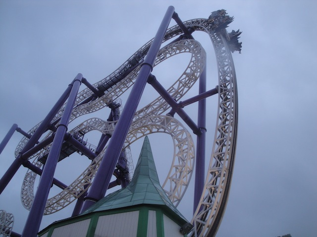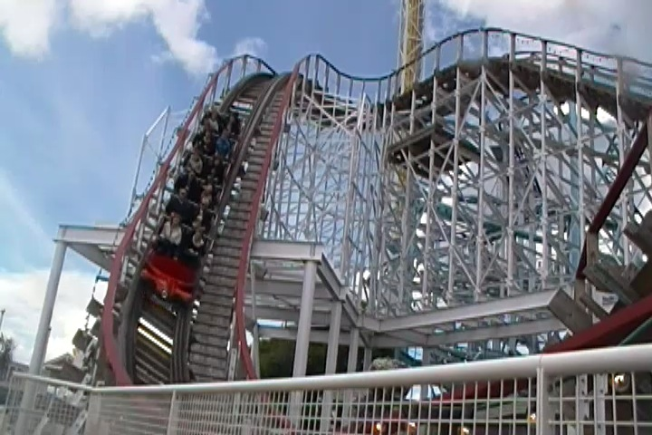
But what else is it that really propels Grona Lund up as one of the Top 10 Theme Parks? Well besides all the coasters, just...just everything about it. You get a really good seaside vibe from the park, and there are so many other cool rides to check out. They also have a 400 ft Starflyer. While I technically didn't get to ride this, I did get to climb it. And just being up there, I mean damn. The view of Stockholm you get from up there is incredible. Who needs observation towers and skyscrapers in famous cities! Just use Starflyers for your views instead! Actually, that's a really good idea. They have at this point, 3 different drop towers. A Space Shot, one of those stand up floorless tilting drop towers that I love so much, and now another one of those funky 90 degree drop towers that look terrifying. So that, all the coasters, and so much more fun rides that Grona Lund has. They have a lot of really cool shows, one of the best funhouses in Europe, and more. Though they could use a good dark ride and a good water ride. All with this sort of seaside carnival atmosphere that makes it stand out. Sure, it may not take you to any far away lands or anything like that. But it does bring great thrills, and all the fun of a seaside carnival into the heart of Stockholm.
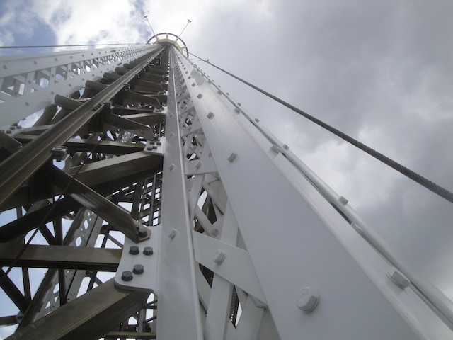
#6.

Liseberg
Gothenburg, Gothenburg, Sweden
OK. If you saw that Grona Lund was one of the Top 10 Theme Parks, then you knew that this was coming. Liseberg and Grona Lund are the two primary theme parks in Sweden, and these two get compared to one another ALL the time. Coaster Enthusiasts LOVE both of these parks and frequently will debate over which of the two is better. And yeah. That's a really tough call as both parks are some of the best parks in all of Europe. I love both, as both are on this list, but why did Liseberg come out on top? Well, the roller coaster selection. I mean, this park has the best wooden coaster in all of Europe, and it's also just one of the best coasters in Europe, as well as one of my favorite coasters period. Balder is freaking awesome. But just having a Top 10 Wooden Coaster isn't all that this park has. They also have a Mack Launched coaster that while I won't say is one of the best rides ever, HOLY CRAP!!! IT'S REALLY GOOD!!! I mean, it just does so much cool stuff. They also have a kickass custom Schwarzkoph, and had to freaking remove an Intamin Rocket Coaster to make way for a B&M Dive Machine. But all that gets overlooked because Balder and Helix are that freaking good! Just think about that. One of the best roller coaster collections out of any theme park. So yeah. Of course us coaster enthusiasts are going to go nuts for Liseberg. =)
 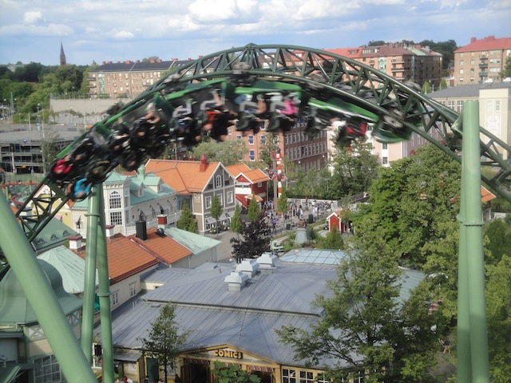
OK. So they have an amazing roller coaster collection. What else about the actual theme park is so great? Well, pretty much everything. Liseberg has more to it than just its amazing coaster collection. And yeah. Just look at everything else. The flat ride collection they have is really freaking good. They have all sorts of cool flat rides, and even managed to turn their observation tower into a freaking drop tower. Because...yeah! Drop Towers are always freaking better than stupid observation towers! They have a fun dark ride, that while nothing special, is a lot of fun. They have some cool water rides that'll do a good job of cooling you down. All this as well as plenty of other fun stuff, good food, and an amazing staff that'll do all that they can do for you. I mean, Liseberg really goes above and beyond. I really enjoyed everything. And, it's all right in the heart of Gothenberg. You don't have to go far from it. Much like how Grona Lund is right smack dab in the middle of Stockholm, Liseberg is right smack dab in the middle of Gotheberg. Hell, it's even the biggest tourist attraction in Sweden. That seems pretty surprising, but when you think about it, why should it be? Liseberg kicks ass and totally deserves that title! So what are you waiting for? Liseberg. Biggest tourist attraction in Sweden and one of the best theme parks ever. 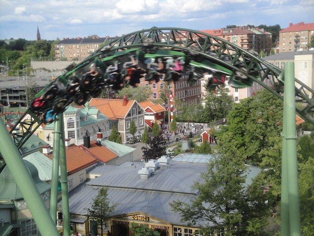
OK. So they have an amazing roller coaster collection. What else about the actual theme park is so great? Well, pretty much everything. Liseberg has more to it than just its amazing coaster collection. And yeah. Just look at everything else. The flat ride collection they have is really freaking good. They have all sorts of cool flat rides, and even managed to turn their observation tower into a freaking drop tower. Because...yeah! Drop Towers are always freaking better than stupid observation towers! They have a fun dark ride, that while nothing special, is a lot of fun. They have some cool water rides that'll do a good job of cooling you down. All this as well as plenty of other fun stuff, good food, and an amazing staff that'll do all that they can do for you. I mean, Liseberg really goes above and beyond. I really enjoyed everything. And, it's all right in the heart of Gothenberg. You don't have to go far from it. Much like how Grona Lund is right smack dab in the middle of Stockholm, Liseberg is right smack dab in the middle of Gotheberg. Hell, it's even the biggest tourist attraction in Sweden. That seems pretty surprising, but when you think about it, why should it be? Liseberg kicks ass and totally deserves that title! So what are you waiting for? Liseberg. Biggest tourist attraction in Sweden and one of the best theme parks ever.
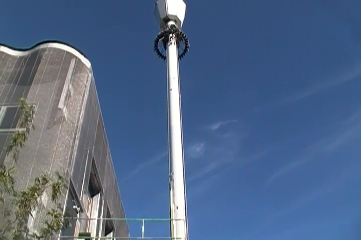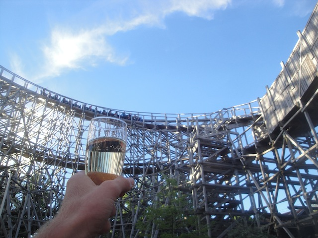
#5.
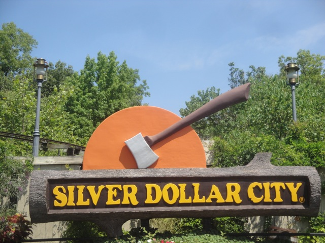
TIE!!!!
Silver Dollar City & Dollywood
Branson, Missouri, U.S.A
& Pigeon Forge, Tennessee, U.S.A
I decided to pick both Silver Dollar City & Dollywood for the #5 spot because...the two parks are so damn similar. I mean, I know that they're both owned by Herschend, and parks under the same owner are bound to be similar. But GOD DAMN!!! These two are similar in frightening ways. They have very similar themes. Silver Dollar City makes its theming feel like you just time traveled into the 19th Century. It really feels like you're in the 1800s there (minus all the disease and terribleness that plagued the past). While Dollywood doesn't specifically have the time travel aspect, there is a very strong Southern vibe that it has, that could sort of feel like old school Time Travel. Now like other parks on the list, Silver Dollar City and Dollywood also feature Top 10 Coaster. Silver Dollar City has a strong one. Outlaw Run has got to be one of the craziest wooden coasters ever built. I can not say enough good things about it. I'm assuming Dollywood also has a strong one with Lightning Rod (Stupid ride being closed). But even if not, Thunderhead is also a Top 10 Woodie. And the other coasters at these parks are pretty damn good as well. Powder Keg and Wildfire are both fantastic roller coasters that I would love to get more rerides on. Mystery Mine is a great Eurofighter with some really good theming. Tennessee Tornado is one of Arrow's best rides, and Wild Eagle is fun. I'd totally say that Silver Dollar City and Dollywood have some great roller coasters for you to ride!!! (Just be sure you don't get stung by any bees.) ;)
  But Silver Dollar City and Dollywood are so much more than just their roller coaster collections. There is literally so much for you to do here at both of these parks. I mean, these are the type of parks where you can just spend a couple of hours walking around the place and be in nirvana, simply because it's just such a great place to be in. Both parks are nestled in the Ozark Mountains and the Smokey Mountains. It's just so cool to take in the beauty of the park and all the little quirks they have (Both parks a good sense of humor). While none of the flat rides were specificlly amazing or incredibly unique. Nevertheless, they're still good flat rides that I always enjoy riding. Both of these parks have a Screaming Swing in a barn. I mean, yeah! Those rides are fun enough. But throw them in a barn, and you've got a great ride even better. The water rides are great, particuarly at Dollywood, where they have not only one of the coolest log flumes, but a freaking water slide (No, not in the adjacent water park. In Dollywood). So yeah. These rides are freaking amazing.
But Silver Dollar City and Dollywood are so much more than just their roller coaster collections. There is literally so much for you to do here at both of these parks. I mean, these are the type of parks where you can just spend a couple of hours walking around the place and be in nirvana, simply because it's just such a great place to be in. Both parks are nestled in the Ozark Mountains and the Smokey Mountains. It's just so cool to take in the beauty of the park and all the little quirks they have (Both parks a good sense of humor). While none of the flat rides were specificlly amazing or incredibly unique. Nevertheless, they're still good flat rides that I always enjoy riding. Both of these parks have a Screaming Swing in a barn. I mean, yeah! Those rides are fun enough. But throw them in a barn, and you've got a great ride even better. The water rides are great, particuarly at Dollywood, where they have not only one of the coolest log flumes, but a freaking water slide (No, not in the adjacent water park. In Dollywood). So yeah. These rides are freaking amazing.
  Now when it comes to food,....it's good. Really really f*cking good. This food is some of the best food you will ever get at an amusement park. There is just so much to choose from. Seriously, food at Silver Dollar City is like heroin. Once you eat some, you just want more and more of it and you blow all your money on it, but it's SO good and SO worth it. I mean, if you've ever had the Cinnamon Bread, then you know what the hell I'm talking about. But I think what really makes these parks stand out on it's own two feet and Sillver Dollar City really provides a unique experience is the Marvel Cave. Now you may be asking, "What is the Marvel Cave?" Well, duh!!! It's a cave!!! And yes, Silver Dollar City is cool enough to have it's very own cave. You literally forget that you're even in an amusement park as they take you hundreds of feet underground and show off the beauty of the earth that just happened to be right in Silver Dollar City's own backyard. And best of all, IT'S NOT AN UPCHARGE!!!!! I could see this at so many other parks being an upcharge experience. And even then, I'd still recommend it. But to have it to Silver Dollar City guests for free with park admission, DAMN!!!!
Now when it comes to food,....it's good. Really really f*cking good. This food is some of the best food you will ever get at an amusement park. There is just so much to choose from. Seriously, food at Silver Dollar City is like heroin. Once you eat some, you just want more and more of it and you blow all your money on it, but it's SO good and SO worth it. I mean, if you've ever had the Cinnamon Bread, then you know what the hell I'm talking about. But I think what really makes these parks stand out on it's own two feet and Sillver Dollar City really provides a unique experience is the Marvel Cave. Now you may be asking, "What is the Marvel Cave?" Well, duh!!! It's a cave!!! And yes, Silver Dollar City is cool enough to have it's very own cave. You literally forget that you're even in an amusement park as they take you hundreds of feet underground and show off the beauty of the earth that just happened to be right in Silver Dollar City's own backyard. And best of all, IT'S NOT AN UPCHARGE!!!!! I could see this at so many other parks being an upcharge experience. And even then, I'd still recommend it. But to have it to Silver Dollar City guests for free with park admission, DAMN!!!!
 
#4.

Tivoli Gardens
Copenhagen, Sjaelland, Denmark
OK. Now this might be a little bit of a surprise. Tivoli Gardens isn't exactly regarded as a coaster enthusiasts paradise. I mean, look at all the other spots on the list. You've got Top 10 Coasters at many of these parks! Phoinex! Balder! Outlaw Run! Thunderhead! Where's the Top 10 Coaster here? There is none (to be fair, Lagoon, Universal Studios Japan, and Grona Lund also lack a Top 10 Coaster, and they made the list as well). But at least those parks have something that comes close! Cannibal is still really freaking good, Flying Dinosaur is unbelievable and damn near close to the list, and Insane was previously a Top 10 Coaster, and is still in the Top 15. But while Tivoli Gardens doesn't have any Top 10 Coasters, or anything that comes close, they still do have a pretty good roller coaster collection. I mean, Rutschebanen is a really fun ride. It's one of the few Scenic Railways in the world, where they still uses a brakeman. So you get some decent airtime because of that. But while they still have an old classic such as that, they also have a B&M Floorless coaster. Sure. Not a huge one. But a cute little B&M floorless that fits in beautifully with the park and really is a fun ride.
  But yeah. It's pretty obvious to tell that it's not the coaster collection that got Tivoli Gardens so damn high on the list. So what did? Essentially, literally everything else. I mean, this park just has a phenomenal balance. And I mean a PHENOMENAL balance! This park practically has everything. The flat ride collection is one of the best. They have one of the coolest flat rides ever, and it's the only one of its kind. So it's both amazing, and insane. Their Starflyer may not be anything special, but the fact that you're soaring up above the Copenhagen skyline really adds a lot to the ride. And yeah. The whole park is located right smack dab in the middle of Copenhagen, currently my favorite city in the world. And Tivoli Gardens is a big part of the city. I mean, it's one of the main tourist attractions in the city. It's not just coaster enthusiasts going because they like theme parks. No, Tivoli Gardens is literally part of Copenhagen culture. They have a bunch of local people perform there. People just go for an afternoon to walk around and to stroll. I'm not sure if I like Copenhagen so much because it has Tivoli Gardens to make it so good, or if I love Tivoli Gardens so much because of how much of Copenhagen is inside it. I guess this is sort of a chicken or the egg scenario. But both would still be awesome without the other. I know that it's most well known for the lights of Tivoli. And...yeah. They're really pretty. I know this is what Tivoli is famous for. And I can see why. But it's not just the lights of Tivoli. The entire park just puts so much effort into everything they do. There are little touches everywhere that make it so much better. The mountains in Rutschebanen, all the elaborate theming with the flat rides, just little touches everywhere. I mean, this is what created the modern theme park. Tivoli Gardens. It's what inspired Walt Disney to create Disneyland. So yeah. All you Disney fanatics, you can thank Tivoli Gardens now.
But yeah. It's pretty obvious to tell that it's not the coaster collection that got Tivoli Gardens so damn high on the list. So what did? Essentially, literally everything else. I mean, this park just has a phenomenal balance. And I mean a PHENOMENAL balance! This park practically has everything. The flat ride collection is one of the best. They have one of the coolest flat rides ever, and it's the only one of its kind. So it's both amazing, and insane. Their Starflyer may not be anything special, but the fact that you're soaring up above the Copenhagen skyline really adds a lot to the ride. And yeah. The whole park is located right smack dab in the middle of Copenhagen, currently my favorite city in the world. And Tivoli Gardens is a big part of the city. I mean, it's one of the main tourist attractions in the city. It's not just coaster enthusiasts going because they like theme parks. No, Tivoli Gardens is literally part of Copenhagen culture. They have a bunch of local people perform there. People just go for an afternoon to walk around and to stroll. I'm not sure if I like Copenhagen so much because it has Tivoli Gardens to make it so good, or if I love Tivoli Gardens so much because of how much of Copenhagen is inside it. I guess this is sort of a chicken or the egg scenario. But both would still be awesome without the other. I know that it's most well known for the lights of Tivoli. And...yeah. They're really pretty. I know this is what Tivoli is famous for. And I can see why. But it's not just the lights of Tivoli. The entire park just puts so much effort into everything they do. There are little touches everywhere that make it so much better. The mountains in Rutschebanen, all the elaborate theming with the flat rides, just little touches everywhere. I mean, this is what created the modern theme park. Tivoli Gardens. It's what inspired Walt Disney to create Disneyland. So yeah. All you Disney fanatics, you can thank Tivoli Gardens now.
 
#3.

Europa Park
Rust, Baden Wuerttemburg, Germany
Hey, if you noticed, I managed to go to both Europa Park and Disneyland Paris on my Mega Europe Trip. And while Disneyland Paris is fun and all, Europa Park is proudly sitting here at the #3 spot on this list. No, this is not a coincidince. Europa Park is a better park and provides a more Disney-esque experience than Disneyland Paris. I know this won't please some extremely crazy Disney people, but man is it true. This park is nearly flawless. Its just about absolutely perfect in every single way. And hey, its got better coasters than Disney. None of them are really Top 10 worthy I'd say, but they're all fun. Their GCI Wodan was a lot of fun. Not my favorite GCI, but I like it better than my home park's GCI, Apocalypse. Blue Fire is a really fun ride with a decent launch, some fun inversions, a funky turn/top hat with some cool hangtime, and possibly one of my favorite Non-Ispeed inline twists on any ride ever. =) Silver Star may be one of the weaker B&M Hypers, but I still find it to be a fun ride. Euro-Mir is a great party ride. The ride itself is fun. But with the soundtrack, the mirrors, and the general funkiness with a group of crazy people, its an absolute blast. Euro-Sat is pretty much Space Mtn, except much faster, with much tighter turns, and some cool techno music. The rest of the coasters aren't earth shattering, but they're all fun and enjoyable. Not a single bad one in the bunch.
  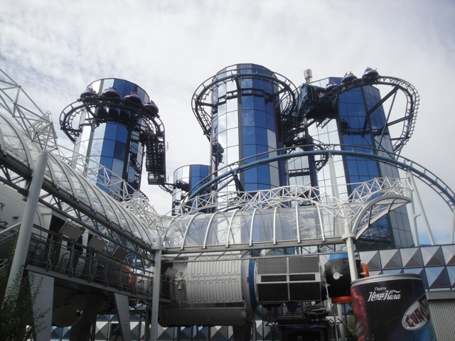
But there must be more. And is there? OF COURSE!!!!!!! OF COURSE THERE'S MORE TO EUROPA PARK!!!! This park has a phenomenal balance. There is literally so much stuff to do at this park. The number of general attractions aside from their 10 rollercoasters is incredible. They have some great water rides for the German Heat. Aside from Posideon, their good water coaster, they also have a log flume, a rapids ride, and a cool shoot the chutes ride, Atlantica Express with a few bonus drops in the beginning. Some say that this makes it a credit (it doesn't), but it does make it a really good water ride which I'm guessing does a great job at being fun and cooling guests down from the German Heat. The dark rides in this park are phenomenal. Not only are they really good, but they are EVERYWHERE!!! Seriously, the number of dark rides in Europa rivals the number at Disneyland. And that's the freaking dark ride capital of the world!!! I loved the haunted mansion knock off, I loved the Winter Wonderland Dark Ride, its all a great experience that just has you in for a real good time. And the theming is just absolutely crazy. It all looks so cool. So real. Much like Silver Dollar City, you are just so engrossed and engulfed in the atmosphere at Europa Park that you just want to kick back, take it slow, and let it all suck you in. =) 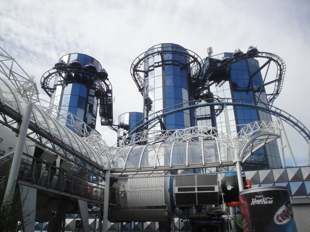
But there must be more. And is there? OF COURSE!!!!!!! OF COURSE THERE'S MORE TO EUROPA PARK!!!! This park has a phenomenal balance. There is literally so much stuff to do at this park. The number of general attractions aside from their 10 rollercoasters is incredible. They have some great water rides for the German Heat. Aside from Posideon, their good water coaster, they also have a log flume, a rapids ride, and a cool shoot the chutes ride, Atlantica Express with a few bonus drops in the beginning. Some say that this makes it a credit (it doesn't), but it does make it a really good water ride which I'm guessing does a great job at being fun and cooling guests down from the German Heat. The dark rides in this park are phenomenal. Not only are they really good, but they are EVERYWHERE!!! Seriously, the number of dark rides in Europa rivals the number at Disneyland. And that's the freaking dark ride capital of the world!!! I loved the haunted mansion knock off, I loved the Winter Wonderland Dark Ride, its all a great experience that just has you in for a real good time. And the theming is just absolutely crazy. It all looks so cool. So real. Much like Silver Dollar City, you are just so engrossed and engulfed in the atmosphere at Europa Park that you just want to kick back, take it slow, and let it all suck you in. =)
  Now when it comes to food, Europa Park has a pretty good spread. They have a resteraunt where you're food is served to you via roller coaster. That is freaking awesome. I'll have to eat there next time I'm at Europa Park. But then all the other food they have is great. I loved their raclette, I loved their gyros, I loved the beer that they served (can these German brands please come to the U.S), and I really loved the dinner they served us at the hotel. And speaking of that, their hotel is freaking awesome!!! We stayed at the Hotel Colloseo and it was fantastic!! Its themed to the Colloseum, and even though I was there just a week before I stayed at this hotel, I was still impressed. That certainly says a lot about how well it is when you can literally go to the real place it was based on just a week before you go there and still be impressed. The other hotels from the looks of it seemed really good as well. All 5 star high quality hotels. But like I said, what really makes Europa Park great is just how much stuff there is to do. Its got a lot of roller coasters, none of them bad, a lot of cool dark rides, good food, and just so many fun things to do that there's no time to see it all. I was there from opening to closing and I still missed some really cool stuff. Highly highly recomend it if you're anywhere near the area.
Now when it comes to food, Europa Park has a pretty good spread. They have a resteraunt where you're food is served to you via roller coaster. That is freaking awesome. I'll have to eat there next time I'm at Europa Park. But then all the other food they have is great. I loved their raclette, I loved their gyros, I loved the beer that they served (can these German brands please come to the U.S), and I really loved the dinner they served us at the hotel. And speaking of that, their hotel is freaking awesome!!! We stayed at the Hotel Colloseo and it was fantastic!! Its themed to the Colloseum, and even though I was there just a week before I stayed at this hotel, I was still impressed. That certainly says a lot about how well it is when you can literally go to the real place it was based on just a week before you go there and still be impressed. The other hotels from the looks of it seemed really good as well. All 5 star high quality hotels. But like I said, what really makes Europa Park great is just how much stuff there is to do. Its got a lot of roller coasters, none of them bad, a lot of cool dark rides, good food, and just so many fun things to do that there's no time to see it all. I was there from opening to closing and I still missed some really cool stuff. Highly highly recomend it if you're anywhere near the area.

#2.
Walt Disney World Resort
Lake Buena Vista, Florida, U.S.A
So yeah. The Walt Disney World Resort is indeed the #2 amusement park I have been to. And yeah, just about everyone knows of the Walt Disney World Resort. The place is not only really famous, but the entire park alone is it's very own tourist destination. None of the other parks on the list are their own tourist destinations. Not even it's sibling park, the Disneyland Resort is it's own tourist destination. Now granted, the Disneyland Resort makes up a pretty big chunk of L.A Tourism. But it is still part of L.A Tourism. The Walt Disney World Resort however, is seperate from Orlando Tourism. Many people will just fly into the Orlando Airport and from there, take the Disney World shuttle into the Walt Disney World Resort and stay there for a week until they hop back on the shuttle to the airport. That's fairly common. Lots of people do this. While lots of tourists do visit the Disneyland Resort, they visit it along with seeing the rest of Los Angeles. Very few people just visit the Disneyland Resort and then just fly back home. So while the Disneyland Resort is a major tourist attraction, it is not a tourist destination, but rather a subdivision of Los Angeles Tourism. Ok, I think I've proved my point. But what else besides the fact that it's a Tourist Destination.
 OK. Now at this point, some of you are screaming "YOU CAN'T PUT THE ENTIRE DISNEY WORLD RESORT AS THE #1 SPOT!! IT'S NOT A THEME PARK!! IT'S 4!!! YOU'RE LUMPING 4 THEME PARKS INTO ONE FOR THIS LIST!!!". To that I say, I count parks the way I want to bitch. Besides, I do the same thing with the Disneyland Resort. Same goes for the Universal Orlando Resort. It's just more jarring in this way. So now to answer the question. "What makes the Walt Disney World Resort the #1 park I've been to?" Well, Disneyland was previously on the list until other theme parks knocked it off, and really, with the exception of inventing the modern theme park, everything that I said about the Disneyland Resort applies to the Walt Disney World Resort. Like the Disneyland Resort, the Walt Disney World Resort has many famous rides including the famous mountains, Space Mountain, Splash Mountain, and Thunder Mountain. Like the Disneyland Resort, the Walt Disney World Resort is rich in dark rides and is home to many famous dark rides such as Pirates of the Carribean and Haunted Mansion, as well as a whole array of Fantasyland Dark rides such as Peter Pan and Pinnochio. Like the Disneyland Resort, the Walt Disney World Resort has fantastic operations that drags everyone else to Mt. Olympus levels. And like the Disneyland Resort, the Walt Disney World Resort is both POV-Friendly and lets you take pictures of your on-ride photos. Now to give the Walt Disney World Resort an edge here, I do find that many of their versions to slightly better. Now many of the WDW versions are slightly better, but a few WDW versions are tremendously better such as Florida's Tower of Terror. No Contest. Not even close. Florida Tower of Terror is much better. But that alone wouldn't propel Walt Disney World Resort to the #2 spot. What else is there?
OK. Now at this point, some of you are screaming "YOU CAN'T PUT THE ENTIRE DISNEY WORLD RESORT AS THE #1 SPOT!! IT'S NOT A THEME PARK!! IT'S 4!!! YOU'RE LUMPING 4 THEME PARKS INTO ONE FOR THIS LIST!!!". To that I say, I count parks the way I want to bitch. Besides, I do the same thing with the Disneyland Resort. Same goes for the Universal Orlando Resort. It's just more jarring in this way. So now to answer the question. "What makes the Walt Disney World Resort the #1 park I've been to?" Well, Disneyland was previously on the list until other theme parks knocked it off, and really, with the exception of inventing the modern theme park, everything that I said about the Disneyland Resort applies to the Walt Disney World Resort. Like the Disneyland Resort, the Walt Disney World Resort has many famous rides including the famous mountains, Space Mountain, Splash Mountain, and Thunder Mountain. Like the Disneyland Resort, the Walt Disney World Resort is rich in dark rides and is home to many famous dark rides such as Pirates of the Carribean and Haunted Mansion, as well as a whole array of Fantasyland Dark rides such as Peter Pan and Pinnochio. Like the Disneyland Resort, the Walt Disney World Resort has fantastic operations that drags everyone else to Mt. Olympus levels. And like the Disneyland Resort, the Walt Disney World Resort is both POV-Friendly and lets you take pictures of your on-ride photos. Now to give the Walt Disney World Resort an edge here, I do find that many of their versions to slightly better. Now many of the WDW versions are slightly better, but a few WDW versions are tremendously better such as Florida's Tower of Terror. No Contest. Not even close. Florida Tower of Terror is much better. But that alone wouldn't propel Walt Disney World Resort to the #2 spot. What else is there?
  So now the question remains. "What more does the Walt Disney World Resort have?" Well, the answer to the question lies right within the question. The answer is more. More. More. More. More. More. More is essentially the key word that propelled the Walt Disney World Resort ahead of the Disneyland Resort. The Walt Disney World is home to 4 theme parks, 2 water parks, Disney Quest, lots of shopping, a Sports Complex, 6 different golf courses, 37 hotels, and more. Yeah. The Disneyland Resort may have a lot to do, but not THAT much to do. And within those theme parks, there are lots of rides that you are not able to ride at the Disneyland Resort. They do not have Rock'N'Rollercoaster at the Disneyland Resort. They do not have Expedition Everest at the Disneyland Resort. They do not have any pavilions at the Disneyland Resort. There is simply more for you to do at the Walt Disney World Resort. And to add more to the Walt Disney World Resort, the place is isolated from society. At the Disneyland Resort, you can tell that you're in Anaheim. You don't have to go far to escape from it. Lake Buena Vista however, is just the Disney World Resort. Nothing else. And it's a few miles away from Orlando. And hell, the resort has lots of space, to give each park within the Walt Disney World Resort it's own isolated place. Now I know many people don't like this fact about the Walt Disney World Resort and like the close proximity the Disneyland Resort has. But whatever. Different strokes for different folks. But yeah. That explains the Walt Disney World Resort. But wait. This is only the #2 Theme Park. So what's #1 then?
So now the question remains. "What more does the Walt Disney World Resort have?" Well, the answer to the question lies right within the question. The answer is more. More. More. More. More. More. More is essentially the key word that propelled the Walt Disney World Resort ahead of the Disneyland Resort. The Walt Disney World is home to 4 theme parks, 2 water parks, Disney Quest, lots of shopping, a Sports Complex, 6 different golf courses, 37 hotels, and more. Yeah. The Disneyland Resort may have a lot to do, but not THAT much to do. And within those theme parks, there are lots of rides that you are not able to ride at the Disneyland Resort. They do not have Rock'N'Rollercoaster at the Disneyland Resort. They do not have Expedition Everest at the Disneyland Resort. They do not have any pavilions at the Disneyland Resort. There is simply more for you to do at the Walt Disney World Resort. And to add more to the Walt Disney World Resort, the place is isolated from society. At the Disneyland Resort, you can tell that you're in Anaheim. You don't have to go far to escape from it. Lake Buena Vista however, is just the Disney World Resort. Nothing else. And it's a few miles away from Orlando. And hell, the resort has lots of space, to give each park within the Walt Disney World Resort it's own isolated place. Now I know many people don't like this fact about the Walt Disney World Resort and like the close proximity the Disneyland Resort has. But whatever. Different strokes for different folks. But yeah. That explains the Walt Disney World Resort. But wait. This is only the #2 Theme Park. So what's #1 then?
 
#1.

Tokyo Disney Resort
Urayasy, Chiba, Japan
Yeah. Anyone who travels interationally for theme parks (and isn't Japanese) who has been to the Tokyo Disney Resort pretty much always ranks this as their favorite theme park (Well, usually they rank Tokyo Disney Sea as their favorite. And for understandable reasons, but I lump resorts all as one, and I ain't no hypocrite). So when I finally got around to going to the Tokyo Disney Resort, you could pretty much see this coming from a mile away. I had a hunch going to the park that this would become my favorite theme park. And yeah. This place is amazing. Tokyo Disneyland is REALLY good. It's pretty much a highlights reel from both Disneyland and the Magic Kingdom in Florida, as well as with a little bit of its own unique attractions, which are also BTW, some of their best. But Tokyo Disney Sea. *ORGASM* HOLY CRAP!!! THIS PLACE IS AMAZING!!! There is NO park like that. NONE of the other Disney Parks are like it. Sure, I'm missing Hong Kong Disneyland and Shanghai Disneyland. So I technically can't judge. But come on. Let's be serious. You know that Tokyo Disney Sea is the best place ever. I mean, just look at this place. Mt. Prometheus looks amazing. I mean....THEY BUILT A F*CKING VOLCANO IN THE MIDDLE OF THE THEME PARK!!! Let alone all the other amazing lands (East Coast, Mexico, Middle East, Little Mermaid, etc).
 OK. Now like I said, the Tokyo Disney Resort is pretty much the highlights reel from all of the Disney Parks. And let's see what all they have. They have Space Mountain, Thunder Mountain, Splash Mountain, Pirates of the Carribean, Haunted Mansion, Tower of Terror, Indiana Jones, Toy Story Mania, Roger Rabbit's Cartoon Spin, Small World, pretty much ALL the classics are here. If there's a specific Disney ride that you love that's cloned at the Disney parks, they almost certainly have it at the Tokyo Disney Resort. But on top of that, they have their own unique Tokyo Disney Only Rides, and some of these are the best rides out there! For instance, Journey to the Center of the Earth. HOLY CRAP!!! THIS RIDE IS AWESOME!!! It uses the same technology as Test Track and Radiator Springs Racers, only with one of the best themes ever! Pooh's Hunny Hunt may sound like just another Fantasyland dark ride, but don't underestimate this ride! The trackless technology and the way the cars move make this dark ride just a ton of fun. Raging Spirits is a fun coaster and all, but its far from the best ride here. And Sinbad's storybook Voyage. I would call this ride criminally underrated, but luckily, more and more people are coming out and saying that Sinbad is incredibly underrated, with great animatronics, great characters, and a great song, this ride is awesome and I'm happy that more people are giving this ride the love it deserves.
OK. Now like I said, the Tokyo Disney Resort is pretty much the highlights reel from all of the Disney Parks. And let's see what all they have. They have Space Mountain, Thunder Mountain, Splash Mountain, Pirates of the Carribean, Haunted Mansion, Tower of Terror, Indiana Jones, Toy Story Mania, Roger Rabbit's Cartoon Spin, Small World, pretty much ALL the classics are here. If there's a specific Disney ride that you love that's cloned at the Disney parks, they almost certainly have it at the Tokyo Disney Resort. But on top of that, they have their own unique Tokyo Disney Only Rides, and some of these are the best rides out there! For instance, Journey to the Center of the Earth. HOLY CRAP!!! THIS RIDE IS AWESOME!!! It uses the same technology as Test Track and Radiator Springs Racers, only with one of the best themes ever! Pooh's Hunny Hunt may sound like just another Fantasyland dark ride, but don't underestimate this ride! The trackless technology and the way the cars move make this dark ride just a ton of fun. Raging Spirits is a fun coaster and all, but its far from the best ride here. And Sinbad's storybook Voyage. I would call this ride criminally underrated, but luckily, more and more people are coming out and saying that Sinbad is incredibly underrated, with great animatronics, great characters, and a great song, this ride is awesome and I'm happy that more people are giving this ride the love it deserves.
  Now when it comes to food, Tokyo Disney Resort has some of the best. Sure, this may sound obvious, as....come on. It's DISNEY!!! OF COURSE THE FOOD IS GOING TO BE GREAT!!! True, but there are just so many good options. First off, one thing worth noting is the popcorn. Now if you're not familiar with Tokyo Disney Popcorn, you may be puzzled. What the hell is so great about the popcorn here? Isn't Popcorn just Popcorn? Normally, it is. But not at Tokyo Disney. They have crazy flavors that you wouldn't think are good, lke Curry and Soy Sauce & Butter, along with sweet flavors, such as Honey and Strawberry, and more normal flavors. But there are many more great food items besides just popcorn. There are great meals all over the resort, good Chinese food at Vulcania, good Mexican food, they've got damn near everything. Waffles, Chicken Sakura, Gyoza, Curry, Monakas, and of course, Booze. And on top of all the rides, they have all sorts of great shows. Again, they recycle some of the best. Fantastmic is here, they have their own Fireworks, which while technically custom, all Disney parks have some version of a fancy fireworks show. Country Bear Jamboree is still here. And of course, I know I already mentioned it, but just the atmosphere of this place, particuarly Tokyo Disney Sea is so amazing. You don't feel like you're in Japan. You feel like you're in New York, Mexico, the Middle East, they do such a good job with theming over here. It's just so amazing. Unquestionably the #1 park ever. Get to Tokyo Disney ASAP!!! The hype is real!!!
Now when it comes to food, Tokyo Disney Resort has some of the best. Sure, this may sound obvious, as....come on. It's DISNEY!!! OF COURSE THE FOOD IS GOING TO BE GREAT!!! True, but there are just so many good options. First off, one thing worth noting is the popcorn. Now if you're not familiar with Tokyo Disney Popcorn, you may be puzzled. What the hell is so great about the popcorn here? Isn't Popcorn just Popcorn? Normally, it is. But not at Tokyo Disney. They have crazy flavors that you wouldn't think are good, lke Curry and Soy Sauce & Butter, along with sweet flavors, such as Honey and Strawberry, and more normal flavors. But there are many more great food items besides just popcorn. There are great meals all over the resort, good Chinese food at Vulcania, good Mexican food, they've got damn near everything. Waffles, Chicken Sakura, Gyoza, Curry, Monakas, and of course, Booze. And on top of all the rides, they have all sorts of great shows. Again, they recycle some of the best. Fantastmic is here, they have their own Fireworks, which while technically custom, all Disney parks have some version of a fancy fireworks show. Country Bear Jamboree is still here. And of course, I know I already mentioned it, but just the atmosphere of this place, particuarly Tokyo Disney Sea is so amazing. You don't feel like you're in Japan. You feel like you're in New York, Mexico, the Middle East, they do such a good job with theming over here. It's just so amazing. Unquestionably the #1 park ever. Get to Tokyo Disney ASAP!!! The hype is real!!!
 
So now I'm sure you know what you're thinking. "Wow. That was the list. That is so wrong." Well no. First of all, this list can not be entirely accurate since I haven't been to every single amusement park in the world. So if you're wondering why I didn't put so and so amusement park on this list, actually check to make sure that I've actually been to the park. And second of all, there is a difference between my view on Top 10 Parks and Parks I want to most visit. If I based my ideas on my selection for the Top 10 Theme parks based on what park I want to visit the most, I'd have to rewrite this entire list every single week due to my desire for the parks I want to visit constantly changing. Plus, even if I based my list on that, the entire list would be composed of parks I haven't been to, because that's the stuff I really crave. I love going to new parks and almost always look foreword to visiting a new park, even if it doesn't look like that good of a park. And to top that all off, I don't really truely rank theme parks. I just picked 10 of my favorite parks and ranked them logically on what I would consider the best. There are several FANTASTIC kick ass parks that I have been to that I did not talk about, but would still recommend. So don't not visit a park just because I didn't rank it as a Top 10 Park. You may very well be turning down a kick ass park. Take a look at our park reviews for more specific details on what is considered a really good park.
|